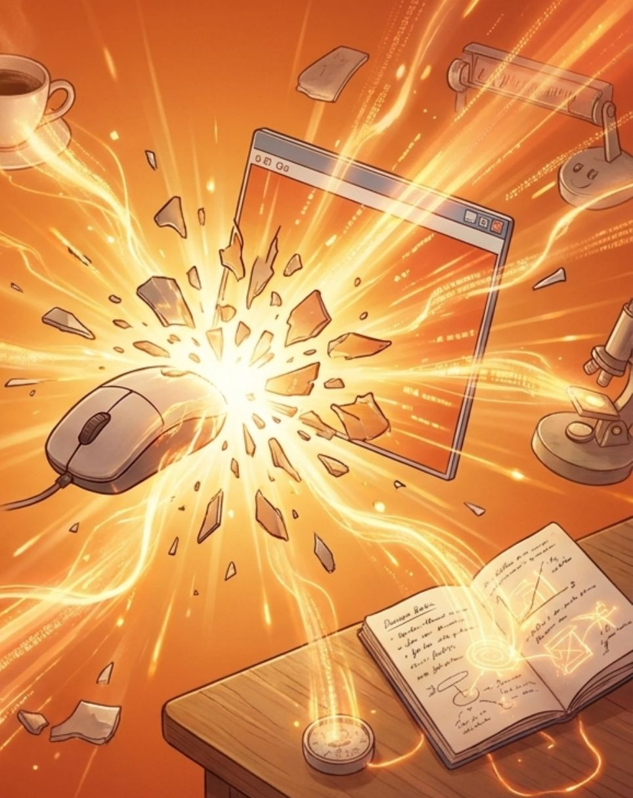
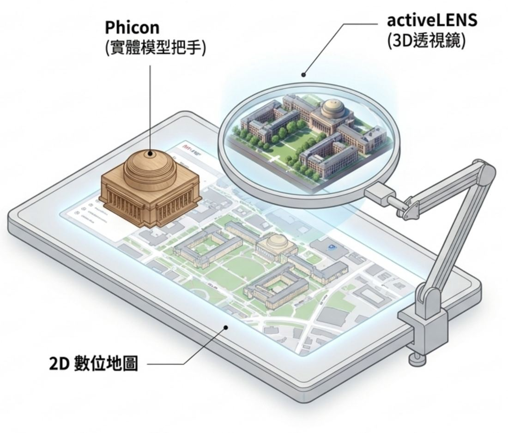

Tangible Bits
打破螢幕牆，讓數位訊息摸得到、看得見
由麻省理工學院 Hiroshi Ishii 教授提出的 TUI 願景：科技的終極目標並非製造更多螢幕，而是將數位資訊 (Bits) 與物理實體 (Atoms) 無縫融合。
按 ↓ 或往下滑開始 · 移動游標，看位元變成原子
HCI Classic / Problem
被困在「矩形螢幕」裡的雙重國籍者
- 雙重世界的斷層我們同時活在實體環境與網路空間，但兩個平行世界卻缺乏無縫橋樑。
- 光束的洩漏無限的數位資訊 (Bits) 只能透過無數個矩形螢幕，以光束的形式洩漏到物理世界。
- 發光的塑膠盒我們把神奇的數位魔法，全關在桌面上一個個死板的 GUI 介面裡。
HCI Classic / Inspiration
從博物館與算盤找回失落的觸覺
- 歷史的觸覺記憶在電腦發明前，人類是透過「觸摸」精美的科學儀器來理解世界與處理資訊。
- 豐富的環境賦能古代的星盤與算盤不僅是計算工具，更擁有多重感官體驗的重量與材質紋理。
- 失落的文化隨著個人電腦的普及，我們漸漸失去了與實體物件進行「觸覺互動」的本能。
HCI Classic / The Vision
TUI 誕生：
打破螢幕，
讓世界成為介面
不再把電腦塞進背景，而是喚醒周遭的實體物件、儀器與空間，消弭實體與虛擬的界線。

HCI Classic / Matrix
介面典範轉移：GUI vs. TUI
| 傳統圖形介面 (GUI) | 實體使用者介面 (TUI) | |
|---|---|---|
| 介面媒介 | 螢幕上的像素Painted Bits | 日常實體物件與空間Tangible Bits |
| 注意力分佈 | 強迫集中於前景Foreground only | 融合前景操作與背景感知Center & Periphery |
| 物理型態 | 扁平、受限於矩形Flat / Rectangular | 具備材質、重量與空間感Tactile / Spatial |
HCI Classic / Concept 1
核心概念一：互動表面 (Interactive Surfaces)
讓牆壁與桌面變成傳送門。不再需要刻意「打開電腦」，因為你所在的房間就是一台巨大的電腦。
生活比喻：就像《哈利波特》裡的魔法地圖，看似普通的羊皮紙（實體表面），卻能即時顯現動態資訊。
HCI Classic / Prototype 1
metaDESK：麻省理工校園在桌面上立體化
- 實體化視窗 將傳統 GUI 的視窗與圖示，徹底轉化為真實世界的實體物件。
- 實體圖示 (Phicons) 把螢幕裡的「數位圖示」，變成可以直接用手抓起來的實體把手。放置大圓頂模型，桌面立即浮現 2D 數位地圖。
- 主動透鏡 (activeLENS) 透過手臂支架上的透鏡，能像放大鏡般直接看見 3D 的校園建築空間。
點圖上的圓點或左側項目，對照 metaDESK 的各個部件。

HCI Classic / Concept 2
核心概念二：背景環境媒體 (Ambient Media)
資訊不一定要用看的，可以是用感受的。
- 潛意識感知利用光線、聲音、氣流、水波，在人類感知的「邊緣」傳遞數位資訊。
- 平行處理器人類大腦能平滑地在「前景專注」與「背景感知」間切換焦點。
- 生活比喻就像你在客廳看電視，不用走進廚房，只要「聞到咖啡香」就知道早餐做好了。
HCI Classic / Prototype 2
ambientROOM：聽見雨聲，就知道今天的網站流量
- 邊緣感知的空間一個專注於人類潛意識感知的實驗房間。
- 流量轉化為雨聲將實體玩具車（Phicon）靠近喇叭，房間便會播放雨聲。雨聲的磅礡程度，代表該產品網頁的「點擊率」。
- 水波紋光影若不想聽見聲音，網路上的每一次點擊也會牽動房間內水箱的機關，在天花板投射出充滿詩意的漣漪。
HCI Classic / Concept 3
核心概念三：位元與原子的結合
讓實體物件自帶數位記憶 (Coupling Bits & Atoms)。
- transBOARD 系統外表是一般的白板，但能將畫布上的所有筆跡同步儲存到雲端。
- 超連結紙卡 (hyperCARDs)帶有條碼的普通紙卡，能作為數位筆記的物理容器。
- 生活比喻就像「悠遊卡」，實體卡片本身沒裝錢，但只要將卡片靠近白板，就能把會議筆記「吸進去」帶走。
畫完後把卡片拖到白板上，筆跡會被吸進卡片；擦掉白板後再靠近一次，筆跡就回來了。
HCI Classic / The Secret Sauce
貫穿一切的光學隱喻
(Optical Metaphors)
為什麼 TUI 這麼直覺好學？
因為它完全遵循人類與生俱來的光學與物理法則。
HCI Classic / Deep Dive
數位影子 (Digital Shadows)：看不見的數據，用光照出來
實體物件投射出物理的黑影，數位物件則投射出數據的影子。我們無須看說明書，大腦秒懂。
拖曳數位手電筒繞著建築模型移動：影子會跟著光的方向改變，光越近，數據影子拉得越長。
HCI Classic / Conclusion
最完美的科技，是退居生活背景，讓我們重新用全身感官去體驗世界。
Tangible Bits 將「畫布上的像素」解放為「可觸摸的位元」。打破螢幕牆，我們不再是受困於發光矩形的囚徒，而是虛實融合世界的主人。